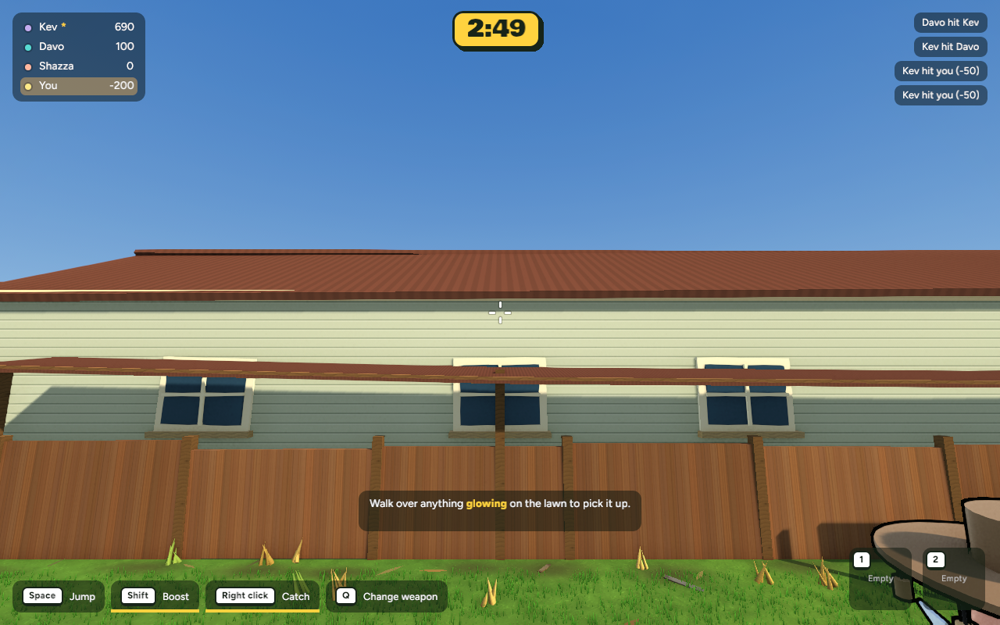
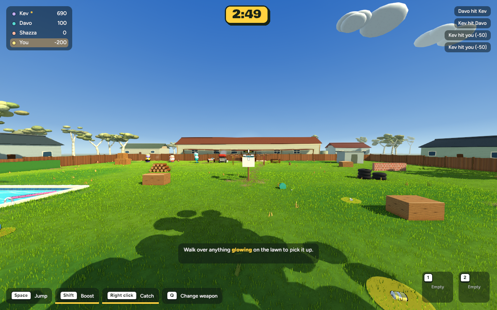
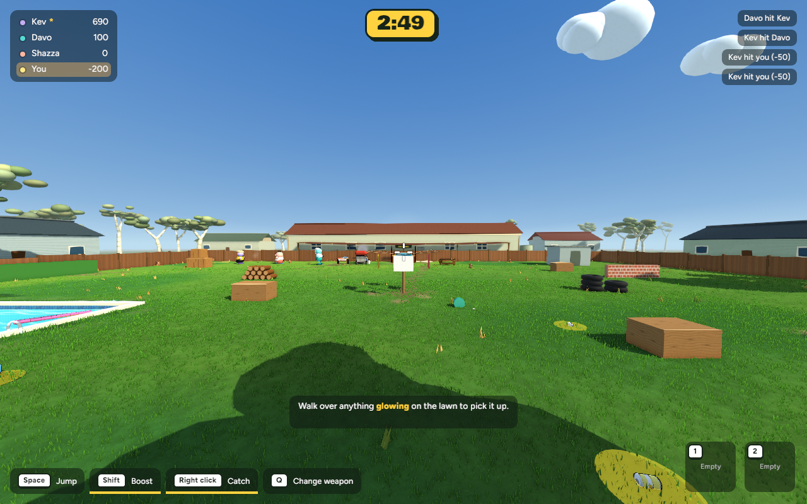
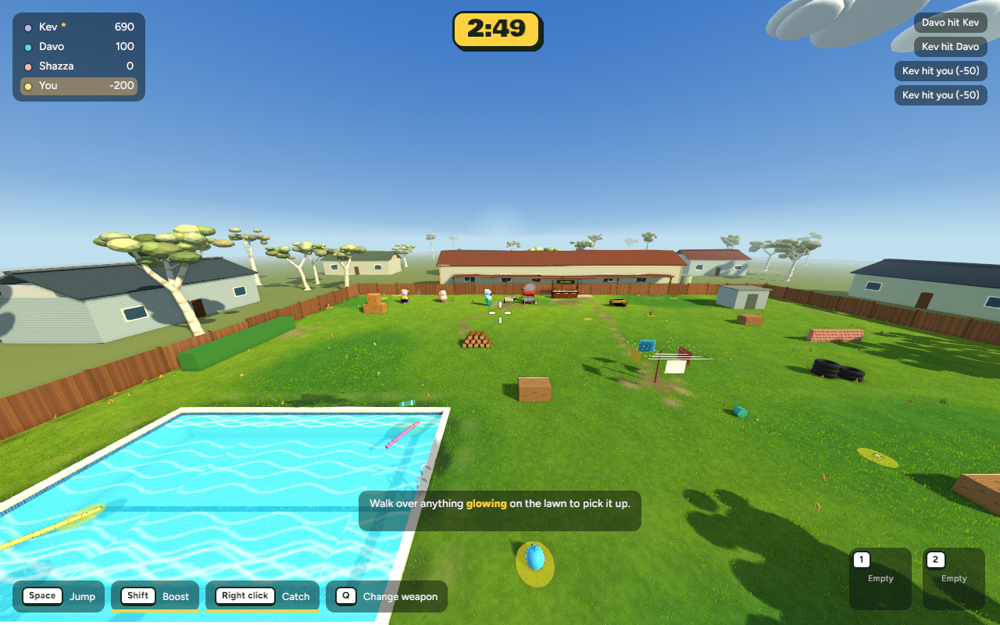
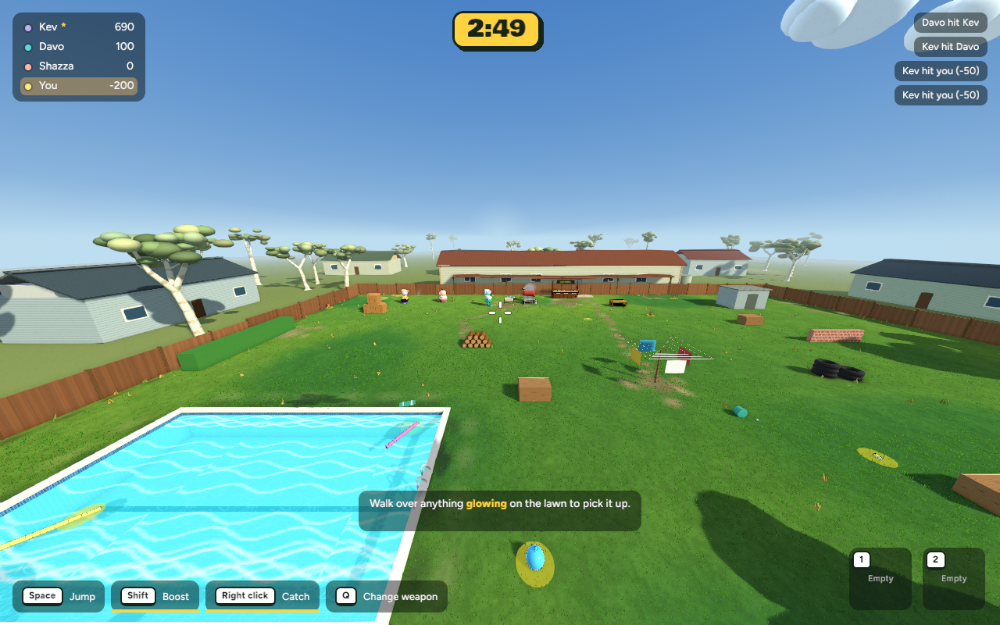
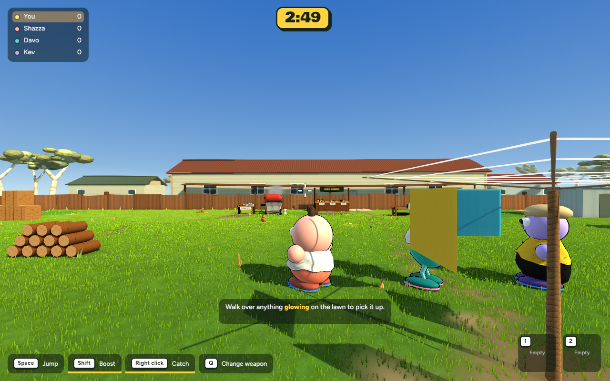
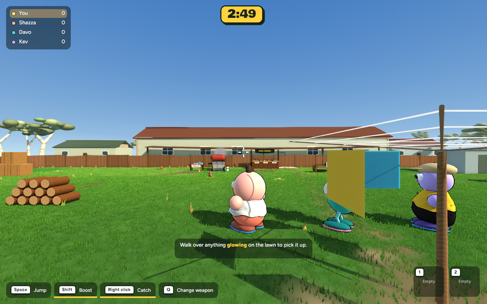
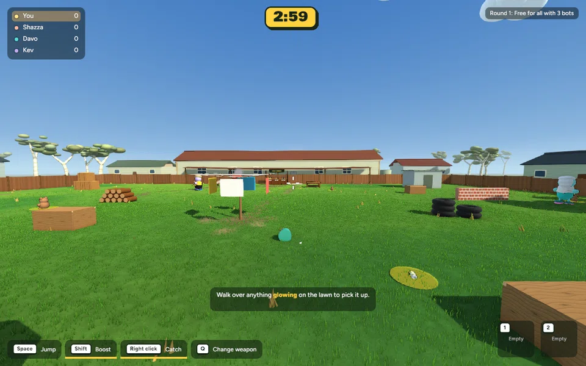

Building


Actual running-game captures · 21 October 2026 · Awaiting review
A calmer green lawn, less yellow sunlight, softer timber and roof detail, rounded gum foliage and fuller clouds. Character designs, collision and gameplay remain unchanged. No generated concept images.
These comparisons use identical camera positions, scene seed, simulation frame, 1280×800 resolution and polished Pop settings.







Actual 60-frame capture drifting across the lawn. This is a short visual check, not a comprehensive shimmer or performance test.

600 wall-clock frame intervals per view, after warmup; uncapped rendering and fixed 60 Hz simulation. Gameplay uses the second alternating before/after pair. Its initial run was 9.00 → 13.00 ms, but two repeat pairs were 9.58 → 9.26 and 9.66 → 9.45 ms; the initial slowdown did not reproduce. The other views are single-run comparisons. An overview capture with a different round state was replaced. Original captures and all timing logs are retained. These are not GPU timings or a guarantee for other hardware.
| View | Before mean | After mean | Change | 95th percentile |
|---|---|---|---|---|
| Gameplay | 9.655 ms | 9.453 ms | -2.1% | 14.24 → 13.42 ms |
| Overview | 8.979 ms | 9.408 ms | +4.8% | 11.93 → 13.89 ms |
| Building | 8.220 ms | 8.392 ms | +2.1% | 12.76 → 13.04 ms |
| Character | 8.856 ms | 8.816 ms | -0.5% | 13.01 → 12.76 ms |
Verification, exact changed files and rollback · Raw comparison